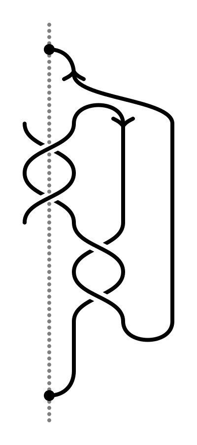

show all invariants|show all metadata
Input data and context

% s.l1.y0.y0.x1.x1.u2
s.l1.y0.y0.x1.x1.u2
,1
% Fixed orientations: s.r1.y0.y0.x1.x1.u2,1
% Simplifies with options '-qs' to l0.x1.l2.y1.y1.y0.y0.y1.y1.y0.x2.x1.y0.x3.x2.x2.u1.x1.x0
Bar-Natan multicurve \(\mathrm{\widetilde{BN}}(T)\)
options -c2-qs
(diagram)
(metadata)
% file 'examples/words/wf324cd2536/cxBNr-c2-qs', generated by kht++ 0.1 on Mon Nov 16 05:50:01 2026 UTC
1) h^ 0 q^ 0 δ^0 ⬮
2) h^-4 q^ -6 δ^1 ⬮~~S~>⬯—>⬯~>⬯—>⬯~>⬮—>⬮<~⬯<—⬯<~⬯<—⬯<~⬮<—
3) h^-8 q^-12 δ^2 ⬮~~S~>⬯—>⬯~>⬯—>⬯~>⬮—>⬮<~⬯<—⬯<~⬯<—⬯<~⬮<—
Khovanov multicurve \(\mathrm{\widetilde{Kh}}(T)\)
options -c2-qs
(diagram)
(metadata)
% file 'examples/words/wf324cd2536/cxKhr-c2-qs', generated by kht++ 0.1 on Mon Nov 16 05:50:01 2026 UTC
1) h^-1 q^ -1 δ^1/2 ⬮~~S^2~>⬮<— r(0) q^0 δ|^1/2
2) h^-5 q^ -7 δ^3/2 ⬮~~S~>⬯—>⬯~>⬯—>⬯~>⬮—>⬮<~⬯<—⬯<~⬯<—⬯<~⬮<— s4(∞) q^-2 δ_^1
3) h^-4 q^ -5 δ^3/2 ⬮~~S~>⬯—>⬯~>⬯—>⬯~>⬮—>⬮<~⬯<—⬯<~⬯<—⬯<~⬮<— s4(∞) q^0 δ_^1
4) h^-9 q^-13 δ^5/2 ⬮~~S~>⬯—>⬯~>⬯—>⬯~>⬮—>⬮<~⬯<—⬯<~⬯<—⬯<~⬮<— s4(∞) q^-8 δ_^2
5) h^-8 q^-11 δ^5/2 ⬮~~S~>⬯—>⬯~>⬯—>⬯~>⬮—>⬮<~⬯<—⬯<~⬯<—⬯<~⬮<— s4(∞) q^-6 δ_^2